| Spielecover und Spielename | Kurzer Steckbrief | Video zum Spiel | Kurioses |
|---|---|---|---|
| 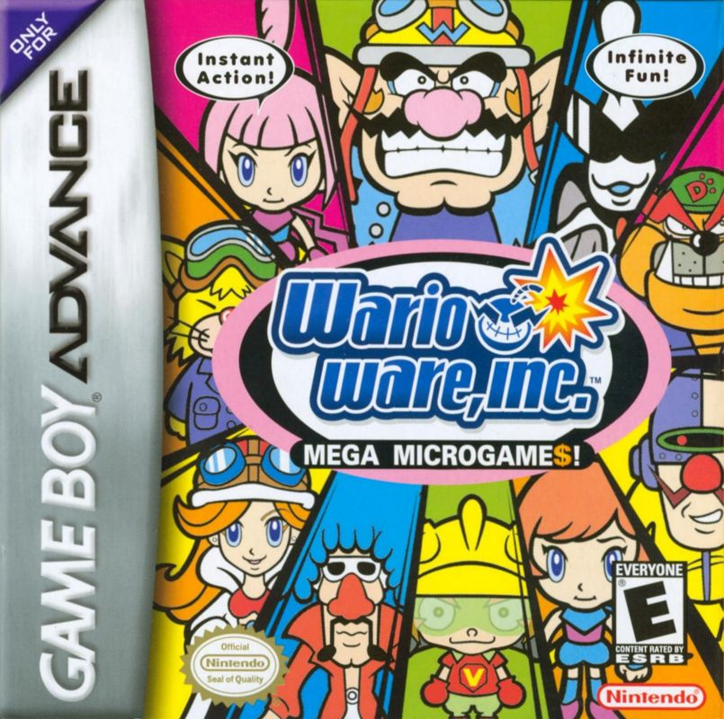 WarioWare Inc. Minigame Mania (PAL) WarioWare, Inc.: Mega Microgame$! (NTSC-U) Made in Wario (NTSC-J) |
Entwickler: Nintendo R&D1 Publisher: Nintendo Plattform: Game Boy Advance Erscheinungsjahr: 2003 |
Die Idee für das Spiel kam von Mario Paint und Mario Artist: Polygon Studio. | |
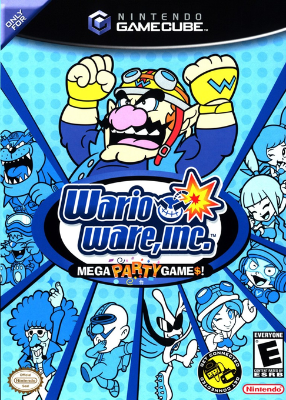WarioWare, Inc. Mega Party Game$! |
Entwickler: Nintendo R&D1 Publisher: Nintendo Plattform: Nintendo GameCube Erscheinungsjahr: 2003 |
Wurde innerhalb von 6 Monaten entwickelt. | |
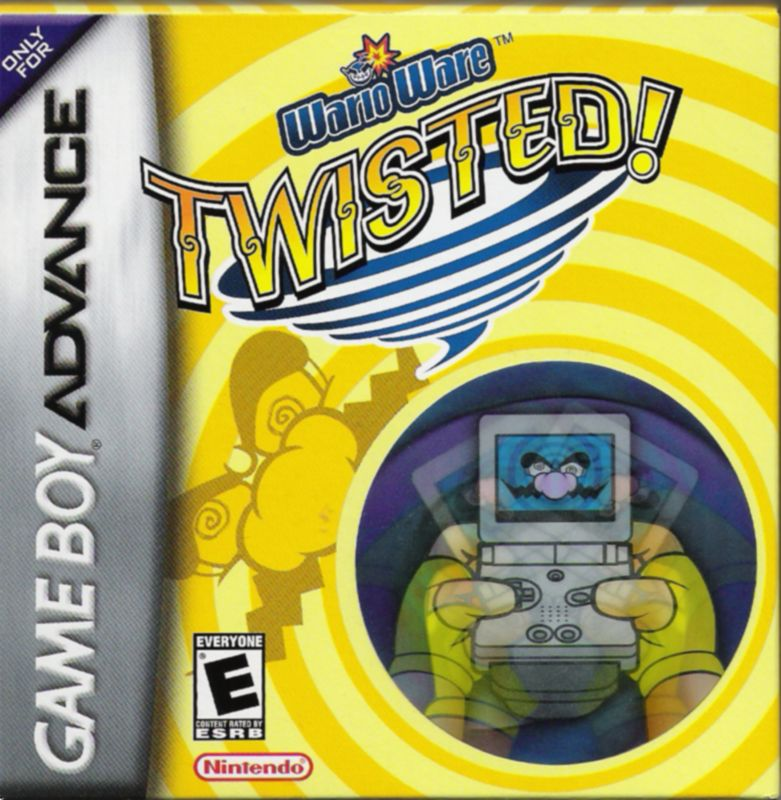WarioWare Twisted! |
Entwickler: Intelligent Systems und Nintendo Software Planning & Development Publisher: Nintendo Plattform: GameBoy Advance Erscheinungsjahr: 2004 (JP) 2006 (NA) |
Das Spiel nutzt (wie im Titel schon angedeutet) meistens den Gyrosensor des Geräts. | |
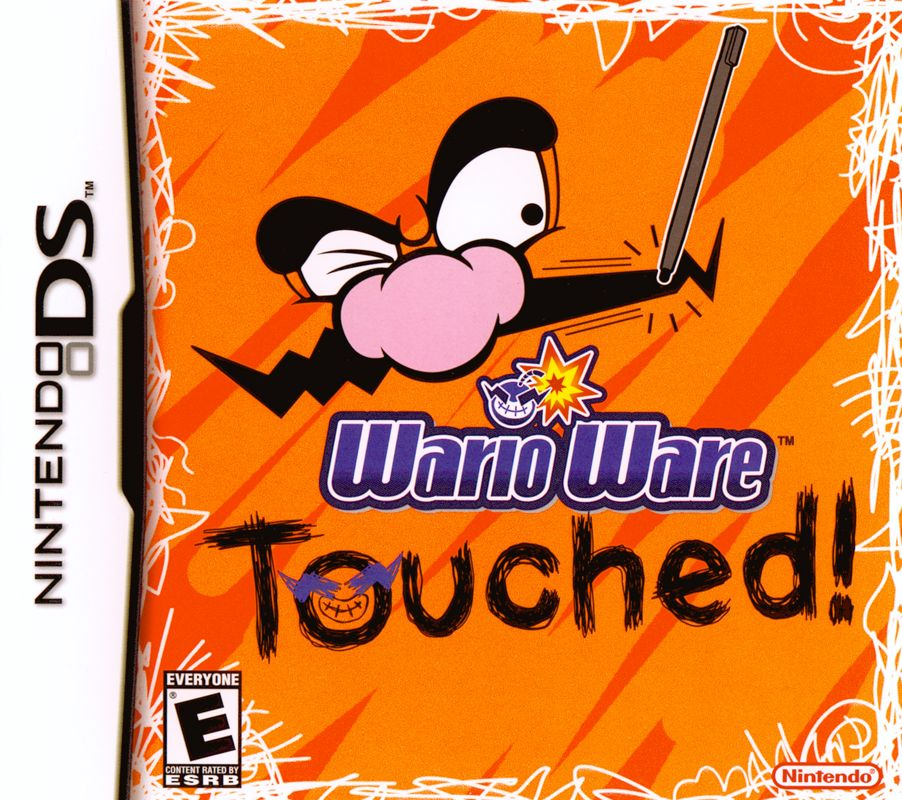WarioWare Touched! |
Entwickler: Intelligent Systems und Nintendo SPD Group No. 1 Publisher: Nintendo Plattform: Nintendo DS Erscheinungsjahr: 2004 (JP) 2006 (NA) |
Hat die Benutzung des Mikrofons eingeführt. | |
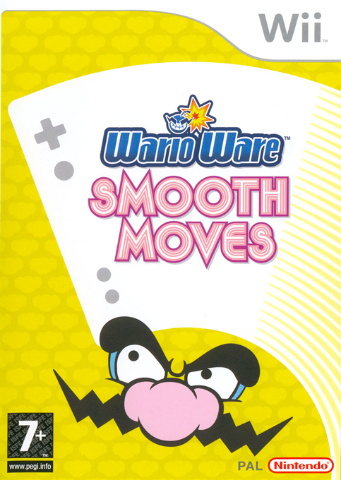WarioWare: Smooth Moves |
Entwickler: Intelligent Systems Publisher: Nintendo Plattform: Nintendo Wii Erscheinungsjahr: 2007 |
Durch die Wii Mote, die im Spiel als "Formenstab" bezeichnet wird, hat man neue Steuerungsoptionen. Man macht sich somit buchstäblich zum Affen. | |
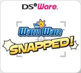WarioWare: Snapped! |
Entwickler: Intelligent Systems und Nintendo SPD Group No.1 Publisher: Nintendo Plattform: Nintendo DSi (DSi Ware) Erscheinungsjahr: 2009 |
Eines der Spiele, welches nicht in Diamond City stattfindet, sondern in einen Themenpark, der von Wario geleitet wird. Er wird die Kamera verwendet. | |
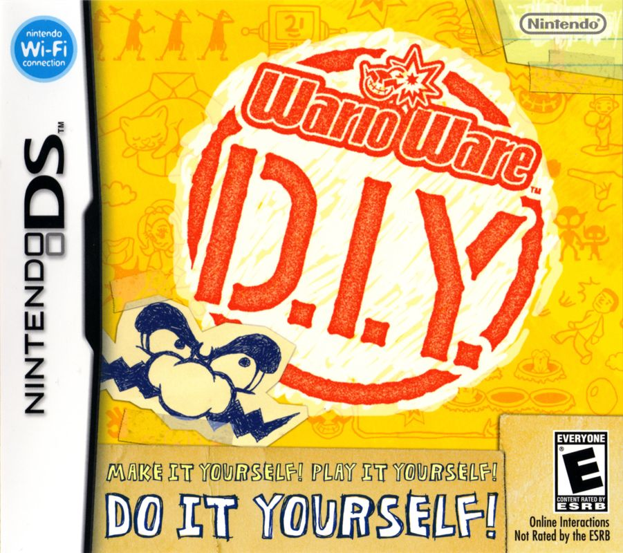WarioWare: D.I.Y |
Entwickler: Intelligent Systems und Nintendo SPD Group No.1 Publisher: Nintendo Plattform: Nintendo DS Erscheinungsjahr: 2009 (JP) 2010 (South Korea) 2011 (NA) |
Da es unendliche Möglichkeiten gibt, das Spiel zu spielen, gibt es in dem Fall kein Video. | Wie in Super Mario Maker, kann man das Spiel verwenden, um eigene Microgames zu erstellen. |
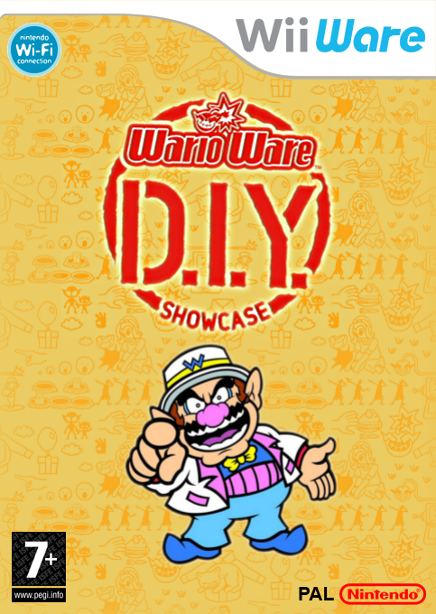WarioWare: D.I.Y. Showcase |
Entwickler: Intelligent Systems und Nintendo SPD Group No.1 Publisher: Nintendo Plattform: Nintendo Wii (WiiWare) Erscheinungsjahr: 2009 (JP) 2010 (NA) 2010 (PAL) |
In dem Spiel kann man die im DS Spiel erstellen Microgames senden und die am Fernsehr spielen. | |
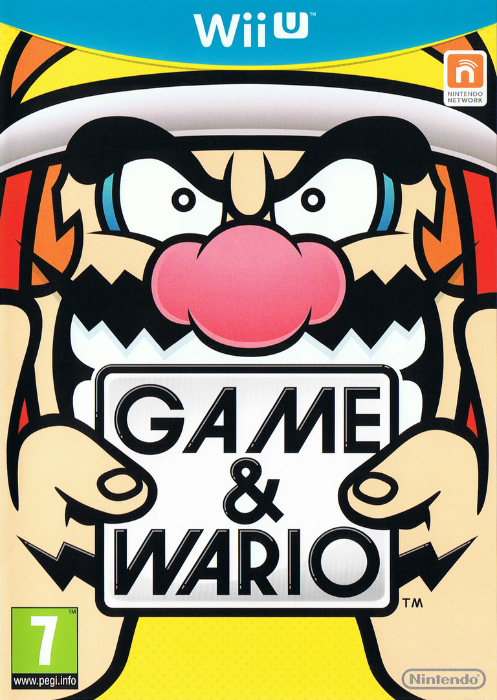Game & Wario |
Entwickler & Publisher: Nintendo Plattform: Nintendo Wii U Erscheinungsjahr: 2013 |
Das Spiel weicht von der eigentlichen WarioWare Formel ab. | |
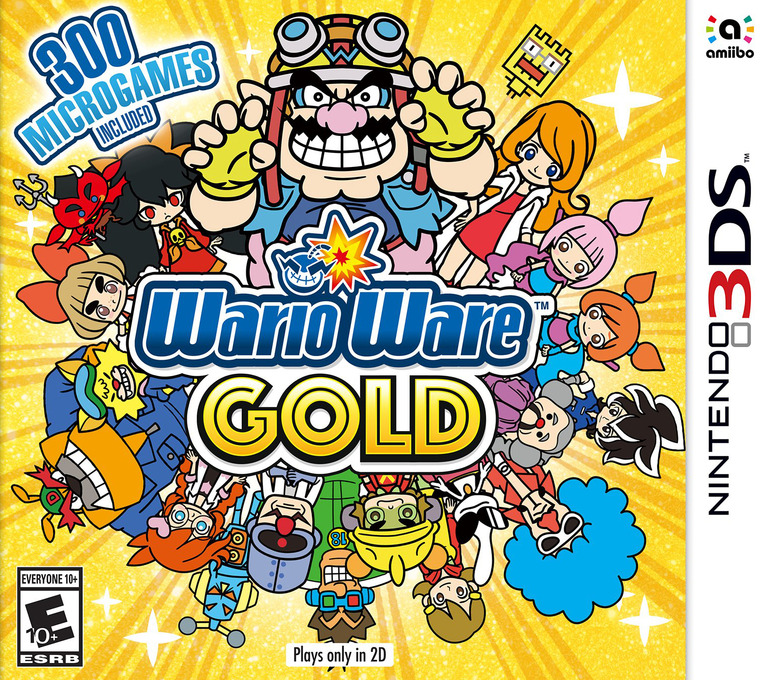WarioWare Gold |
Entwickler: Nintendo EPD und Intelligent Systems Publisher: Nintendo Plattform: Nintendo 3DS Erscheinungsjahr: 2018 |
Es beinhaltet Spiele aus den älteren WarioWare Teilen, aber auch neue. Also ist es ne Art von Compilation. | |
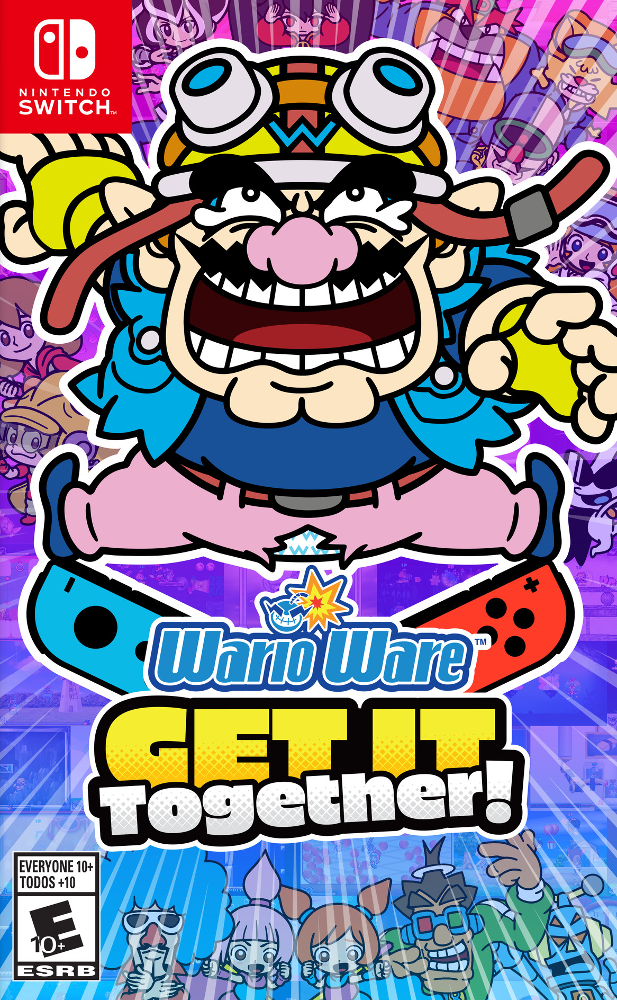WarioWare: Get It Together |
Entwickler: Nintendo EPD und Intelligent Systems Publisher: Nintendo Plattform: Nintenso Switch Erscheinungsjahr: 2021 |